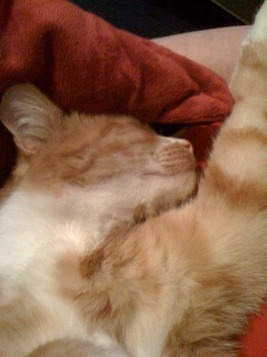
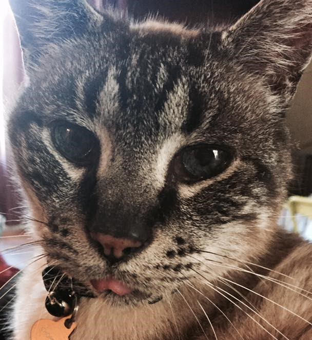
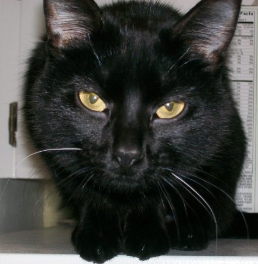
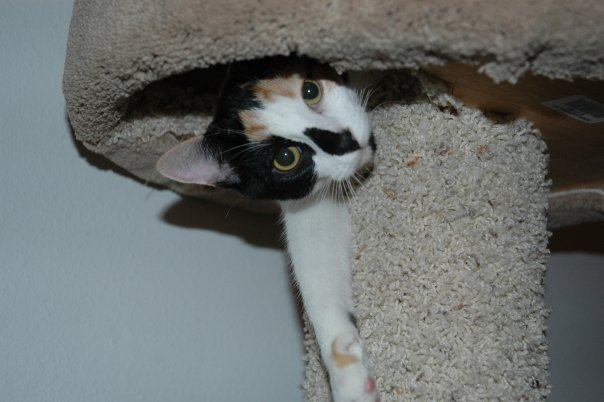

Kitties To Go!
Seattle's premiere drive-thru cat rentals
Meet our Kitties!
Tucker
Tucker can be on the demanding side, but if you provide him with ample amount of kitty treats he gets quite affectionate. Tucker enjoys the outside. He prefers to spend his days lounging outside, unless you have treats! Tucker will do tricks for treats too. He is quite the character. Book Now
Chopstick
Chopstick is the most loving cat you'll find. He is content to snuggle on your lap all day. He has the prettiest blue eyes. Chopstick has several nicknames; which include, Choppers, Mr. Blue-eyes and Old Cat. If you're looking for a quiet day of lounging, then this cat is for you! Book Now
Billy
Billy is a very mellow cat that likes to be around people. He will snuggle up and give you a hug every chance he can. Billy's favorite treats are bonito flakes.
If you are looking for a cat that will brighten up your day and provide you with lots of love and affection, then don't miss out on this guy! Book Now
Mia
Mia is quite the talker. She will let you know when she is thirsty for a drink of water from the fountain, in other words, from the bathroom sink. Mia will let you know when she is ready for treats and when she is ready for allowing you the privledge of letting her sit on your lap. If you're looking for a cat that will keep you company and provide you with stimulating converstation, then look no more. Mia is your gal! Book Now